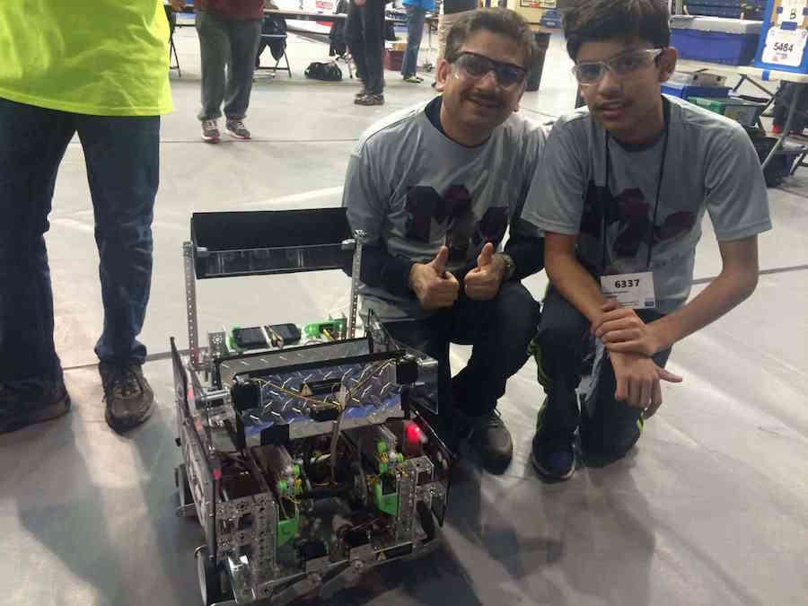
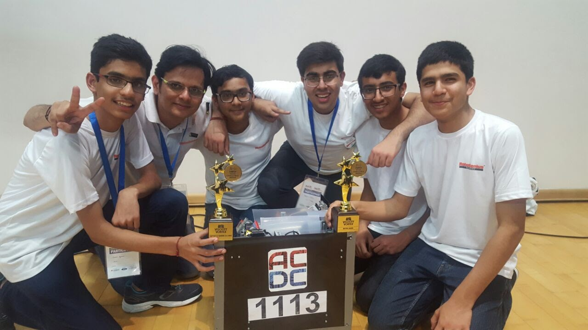

PROJECTS
FTC 2015-16

FIRST Tech Challenge is a robotics competition designed for students in grades 7-12. Teams are responsible for designing, building, and programming their robots in a 10-week build period to compete in an alliance format against other teams. Teams are also required to make an 'Engineering Notebook' that documents their build season and experience.
Res-Q, the 2015-16 edition of the FIRST Tech Challenge, challenged students to design and build robots capable of climbing ramps, depositing debris in designated areas and hanging, among other tasks.
Our robot featured a robust drivetrain, a 3D-printed bucket for efficient collection of debris, as well as a cascading slide system (with custom, 3D-printed pulleys) capable of extending to maximum length in less than 4 seconds.
Awards and Achievements
- Inspire Award: Hudson Valley Qualifiers
- PTC Design Award: New Jersey State Championship
- Control Award: New York State Championship
- Finalist Alliance, 2nd pick: Vermont State Championship
WRO 2016-17

World Robot Olympiad is a global robotics competition for students. The 2016 season, Rap the Scrap, was held in Delhi, India in November 2016. The competition began in October, with the Delhi-NCR Regionals being the opening tournament of the season. This year saw an immense increase in the number of teams, trying to figure out a way of solving a much more complex challenge- Waste Sorting.
The 2016 Regular Junior High challenge 'Waste Sorting' requires a robot to autonomously identify and locate the different types of wastes (denoted by cubes of different sizes and colours) found inside the house, and take them to their respective bins, to sort the waste. The challenge requires locating the different bins available for sorting (also differentiated by colors, and location), identifying different wastes available, and matching the wastes to their respective bins using an algorithm. Finally, to score points, the robot needs to pick the wastes, deposit them in the bins, and return to the start area (the house).
Awards and Achievements
- Regional Championship: 1st Position
- National Championship: 2nd Position
- International Championship: 2nd Position
FTC 2016-17

Velocity Vortex, the 2016-17 edition of the FIRST Tech Challenge, requires a robot to perform a variety fo different tasks. The match begins with a 30 second autonomous period, where the robots can only operate by pre-programmed instructions. In this period, points are awarded if the robot presses the correct beacon buttons, successfully shoots 'particles' (balls) into designated areas and/or parks on a ramp or raised platform. The autonomous period is followed by a 2 minute driver-controlled period, where points are awarded if the robot shoots particles into the designated areas and/or lifts a 'cap ball' (gym ball).
Our robot features a holonomic drivetrain for increased maneuverability, a flicker for quickly and effectively launching the particles and a mechanism for pressing the correct beacon buttons.
Awards and Achievements
- Inspire Award: FTC National Championship
- Winning Alliance Captain: FTC National Championship